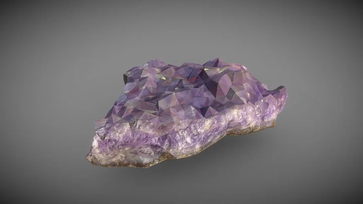

01 / Next-pass proposal
Amethyst crystal scan
Half-buried purple crystal beside a shaded rock, with restrained inner glow.
A 1,000-triangle scan; add glow through our material, not a large light.
Model by Eydeet · CC BY 4.0
Source preview credited to the model artist and hosting site.